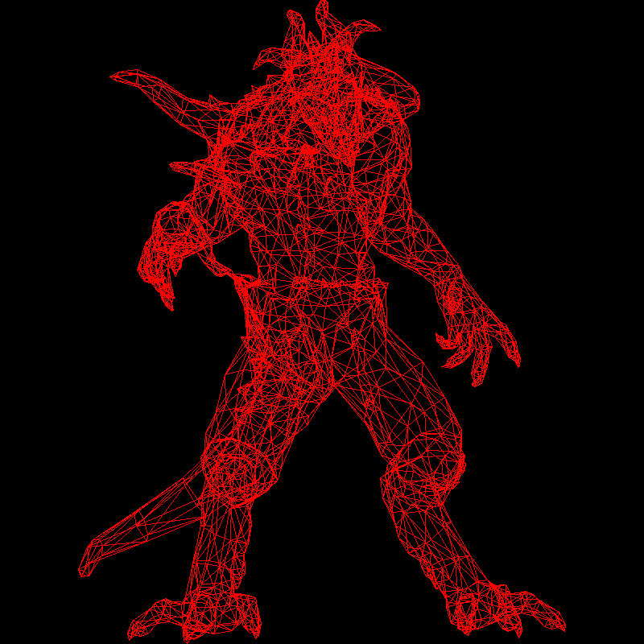

TinyRenderer个人学习笔记
这份笔记大致按照的是TinyRenderer的顺序来实现软光栅，但是并没有照搬。笔记主要记录的是自己在实现过程中完成的部分、一些优化思路，不会赘述原项目的内容。鄙人才疏学浅，难免犯错，有问题还请大家指正。
Bresenham画线
这部分的目标是搓一个能画.obj轮廓的程序
教程中提供了tgaimage.h和tgaimage.cpp，其中包含了对.tga格式最基本的处理函数，剩下的都是自己搓。
第一次尝试
文件结构
tinyrenderer/
├── include/ # 所有头文件目录
│ ├── vector.h
│ ├── model.h
│ └── tgaimage.h
└── src/ # 所有源文件目录
├── model.cpp
├── tgaimage.cpp
└── main.cpp
vector.h
我们需要一种数据结构来存储顶点（vertex）的xyz坐标，由于不能用Eigen库，我们自己定义一个简单的结构就行，这就是vector.h。
struct Vec2i
{
int x, y;
Vec2i(int x = 0, int y = 0) : x(x), y(y) {}
};
struct Vec3f
{
float x, y, z;
Vec3f(float x = 0, float y = 0, float z = 0) : x(x), y(y), z(z) {}
};
分别包含一个二维整数向量和一个三维浮点向量的定义。
tips: 标准库里的std::vector是动态数组。
model.h
这个头文件包含了Model类的定义和方法，其中filename就是文件的路径。
#include <string>
#include <vector>
#include "vector.h"
class Model
{
public:
Model(const std::string& filename); //加载模型
int nverts() const; //返回顶点数量
int nfaces() const; //返回面数量
Vec3f vert(const int i) const; //返回第i个顶点坐标
Vec3f vert(const int iface, const int nthvert) const;
//返回第iface个面第nthvert个顶点坐标
private:
std::vector<Vec3f> verts;
std::vector<std::vector<int>> faces;
};
void Log(const std::string& message);
model.cpp
主要的函数是Model::Model(const std::string& filename)，用于加载模型
教程提供了一个wavefront obj文件，我们需要先大致了解一下这种格式，这种格式是纯文本的，可以直接用vscode打开。
一个.obj文件通常存储了两大类信息：数据点 和 拓扑结构
数据点部分通常位于文件的前半部分，定义了模型所有的原材料
v - 几何顶点
vt - 纹理坐标
vn - 顶点法线
拓扑部分部分是 f (Face)，它不存储坐标，只存储索引。它告诉计算机：把第几个点、第几个纹理、第几个法线连起来，构成一个面，f v/vt/vn v/vt/vn v/vt/vn。
大多数现代 GPU 只能画三角形，如果你读到了四边形，通常需要在代码里把它拆分成两个三角形。本次提供的暗黑破坏神的模型都是三角形，但是如果去blender直接导出一个立方体的话，你就会发现 f 行每行有四组，不过我在第一次实现中没有管四边形。
剩下的基本上就是标准库的使用了，c with stl这一块。在第一部分的内容中，我们不需要管法线和纹理，也就是说，只需要读取和识别 v 和 f ，其余部分可以都丢掉。
需要注意的是，f 的索引从 1 开始，所以把面存入动态数组时需要把索引减1。
#include <string>
#include <iostream>
#include <vector>
#include <fstream>
#include <sstream>
#include "../include/model.h"
void Log(const std::string& message) {
std::cout << message << std::endl;
}
Model::Model(const std::string& filename) {
std::ifstream in;
in.open(filename);
if (!in.is_open()) {
Log("Cannot open file: " + filename);
return;
}
std::string line;
while (!in.eof()) {
std::getline(in, line);
std::istringstream iss(line);
std::string type;
iss >> type;
if (type == "v") {
float x, y, z;
iss >> x >> y >> z;
verts.push_back(Vec3f(x, y, z));
}
else if (type == "f") {
//blender的导出格式是 f v/vt/vn..
std::vector<int> face_indices;
int idx;
char trash; //用来吃掉斜杠
while (iss >> idx) {
idx--;
face_indices.push_back(idx);
if(iss.peek() == '/') {
iss >> trash;
if (iss.peek() != '/') {
//处理纹理vt
int vt;
iss >> vt;
}
if (iss.peek() == '/') {
iss >> trash;
//处理法线
int vn;
iss >> vn;
}
}
}
faces.push_back(face_indices);
}
else continue;
}
}
int Model::nverts() const {
return static_cast<int>(verts.size());
}
int Model::nfaces() const {
return static_cast<int>(faces.size());
}
Vec3f Model::vert(const int i) const {
return verts[i];
}
Vec3f Model::vert(const int iface, const int nthvert) const {
return verts[faces[iface][nthvert]];
}
main.cpp
接下来要用读取到的数据画线了，但是我们仍然会遇到两个问题。
1、我们读取的坐标信息包含了 $\(z\)$ 轴，但是目前我们只知道设置 $\(xy\)$ 轴。
在第一章，我们进行的操作实际上是沿 $\(z\)$ 轴方向的正交投影，相当于直接把模型压扁到 $\(xOy\)$ 面上了。这操作很简单，也就是说我们不用管 $\(z\)$ 轴了，而且看起来效果还行。
- 公式：
\(x_{screen} = x_{model}\)
\(y_{screen} = y_{model}\)
-
物理意义：把三维物体垂直拍扁在屏幕上。
-
视觉效果：没有透视（近大远小），只有轮廓。
代价就是信息的丢失，在只画线的时候感觉不明显，但是如果进入填充模式要给三角形上色，就会出现问题。这部分我们会在后面的章节解决。
2、我们使用TGAImage的方法void set(const int x, const int y, const TGAColor &c)来设置 \((x, y)\) 点的像素颜色，传入的xy需要是整形，但是我们读取到的顶点坐标都是浮点型。而且打开obj文件会发现顶点的坐标都是在 \([-1, 1]\) 范围内，如果强行转换成整型，就会都变成 0 。
为了让它们正确显示，我们要把这些坐标对应到屏幕上。
//假如我初始规定了这样大小的屏幕
constexpr int width = 800;
constexpr int height = 800;
TGAImage framebuffer(width, height, TGAImage::RGB);
要把 \([-1, 1]\) 范围内的 $\(xy\)$ 分别映射到 \([0, width]\) 和 \([0, height]\)，我们需要进行以下操作：
int screen_x0 = static_cast<int>((v0.x + 1.0f) * width / 2.0f);
int screen_y0 = static_cast<int>((v0.y + 1.0f) * height / 2.0f);
int screen_x1 = static_cast<int>((v1.x + 1.0f) * width / 2.0f);
int screen_y1 = static_cast<int>((v1.y + 1.0f) * height / 2.0f);
.obj 文件里存储的顶点坐标 \((x, y, z)\)，其实是模型空间 (Model Space) 的坐标，也被称为局部空间 (Local Space)。
为了让你彻底理解这意味着什么，以及它在后续课程中的位置，我们可以打个比方。
在 TinyRenderer 的第一章，其实做了一个巨大的简化。
完整的图形学流水线（Pipeline）是这样的：
- 模型空间 (Model Space)：OBJ 文件里的原始数据。
- (现状)
- 世界空间 (World Space)：你把人偶摆在房间的角落里。
- 需要乘以 Model Matrix (模型矩阵)。
- 观察空间 (View Space / Camera Space)：以摄像机为中心看这个世界。
- 需要乘以 View Matrix (视图矩阵)。
- 裁剪空间 (Clip Space) / 归一化设备坐标 (NDC)：把视野内的东西压缩到 \([-1, 1]\) 的立方体里。
- 需要乘以 Projection Matrix (投影矩阵)。
- 屏幕空间 (Screen Space)：把 \([-1, 1]\) 映射到像素坐标 \([0, 800]\)。
- (刚才写的
(x+1)*width/2就是这一步)
- (刚才写的
现在的做法实际上是： 假设模型就放在世界中心 \((0,0,0)\)，摄像机正对着它，没有任何旋转或位移。 所以跳过了中间所有的矩阵变换，直接把模型空间强行当成了NDC（\([-1, 1]\) 范围），然后一步转换到了屏幕空间。
#include <string>
#include <iostream>
#include <vector>
#include <fstream>
#include <sstream>
#include "../include/model.h"
#include "../include/tgaimage.h"
constexpr TGAColor white = {255, 255, 255, 255}; // attention, BGRA order
constexpr TGAColor green = { 0, 255, 0, 255};
constexpr TGAColor red = { 0, 0, 255, 255};
constexpr TGAColor blue = {255, 128, 64, 255};
constexpr TGAColor yellow = { 0, 200, 255, 255};
void draw_line(int x0, int y0, int x1, int y1, TGAImage& framebuffer, TGAColor color) {
//画线段的Bresenham算法实现
bool steep = false;
steep = (std::abs(x0 - x1) < std::abs(y0 - y1));
if (steep) {
std::swap(x0, y0);
std::swap(x1, y1);
}
if(x0 > x1) {
std::swap(x0, x1);
std::swap(y0, y1);
}
for (int x = x0; x <= x1; x++) {
float t = (x - x0) / static_cast<float>(x1 - x0);
int y = std::round(y0 + (y1 - y0) * t);
if (steep) {
framebuffer.set(y, x, color);
} else {
framebuffer.set(x, y, color);
}
}
}
int main(int argc, char** argv) {
constexpr int width = 800;
constexpr int height = 800;
TGAImage framebuffer(width, height, TGAImage::RGB);
//这里可以改成从命令行参数传入模型路径
Model model("F:/VSproject/TinyRenderer/obj/diablo3_pose/diablo3_pose.obj");
int num_faces = model.nfaces();
for (int i = 0; i < num_faces; i++) {
for (int j = 0; j < 3; j++) {
Vec3f v0 = model.vert(i, j);
Vec3f v1 = model.vert(i, (j + 1) % 3);
int screen_x0 = static_cast<int>((v0.x + 1.0f) * width / 2.0f);
int screen_y0 = static_cast<int>((v0.y + 1.0f) * height / 2.0f);
int screen_x1 = static_cast<int>((v1.x + 1.0f) * width / 2.0f);
int screen_y1 = static_cast<int>((v1.y + 1.0f) * height / 2.0f);
draw_line(screen_x0, screen_y0, screen_x1, screen_y1, framebuffer, red);
}
}
framebuffer.write_tga_file("framebuffer.tga");
return 0;
}
结果与复盘
结果
我们会得到以下图片：
复盘
我们引入chrono库进行记时，并且让核心的画线部分循环1000次。由于解析 OBJ 是文件 IO 操作，耗时且解析后的数据不会变，重复解析只会让计时结果失真，所以不放进循环。
int main(int argc, char** argv) {
constexpr int width = 800;
constexpr int height = 800;
const int LOOP_TIMES = 1000;
TGAImage framebuffer(width, height, TGAImage::RGB);
//这里后续可以改成从命令行参数传入模型路径
Model model("F:/VSproject/TinyRenderer/obj/diablo3_pose/diablo3_pose.obj");
int num_faces = model.nfaces();
int num_verts = model.nverts();
auto start_time = std::chrono::steady_clock::now();
for (int k = 0; k < LOOP_TIMES; k++) {
for (int i = 0; i < num_faces; i++) {
for (int j = 0; j < 3; j++) {
Vec3f v0 = model.vert(i, j);
Vec3f v1 = model.vert(i, (j + 1) % 3);
int screen_x0 = project(v0.x, width);
int screen_y0 = project(v0.y, height);
int screen_x1 = project(v1.x, width);
int screen_y1 = project(v1.y, height);
draw_line(screen_x0, screen_y0, screen_x1, screen_y1, framebuffer, red);
}
}
}
framebuffer.write_tga_file("framebuffer.tga");
auto end_time = std::chrono::steady_clock::now();
auto duration_ms = std::chrono::duration_cast<std::chrono::milliseconds>(end_time - start_time).count();
auto duration_s = std::chrono::duration_cast<std::chrono::seconds>(end_time - start_time).count();
std::cout << "程序运行完成！" << std::endl;
std::cout << "总运行时间：" << duration_ms << " 毫秒" << std::endl;
std::cout << "总运行时间：" << duration_s << " 秒" << std::endl;
return 0;
}
结果：

其实很明显我们在main.cpp中有至少三个可以优化的点
第二次尝试
1、我的Bresenham算法实现并不是最标准的，它包含了两个性能瓶颈
float t = (x - x0) / static_cast<float>(x1 - x0); // 浮点除法！最慢的操作
int y = std::round(y0 + (y1 - y0) * t); // 浮点加法、乘法、取整
其实我们不需要算出具体的 y 是多少，我们只需要知道：每当 x 移动一步，y 到底该不该动一步？这通过一个误差变量 error 来累计
void draw_line(int x0, int y0, int x1, int y1, TGAImage& framebuffer, TGAColor color) {
//画线段的Bresenham算法实现
bool steep = false;
steep = (std::abs(x0 - x1) < std::abs(y0 - y1));
if (steep) {
std::swap(x0, y0);
std::swap(x1, y1);
}
if(x0 > x1) {
std::swap(x0, x1);
std::swap(y0, y1);
}
int dx = x1 - x0;
int dy = std::abs(y1 - y0);
int error = 0;
int ystep = (y0 < y1) ? 1 : -1;
int y = y0;
for (int x = x0; x <= x1; x++) {
if (steep) {
framebuffer.set(y, x, color);
} else {
framebuffer.set(x, y, color);
}
// 原本的斜率是 dy/dx。如果不动用除法，我们就在 error 里累加 dy
// 当 error 攒够了一个 dx 时，说明 y 该走一步了
error += dy;
// 这里实际上是把 error 扩大了 dx 倍来比较，避免除法
// error >= 0.5 (即 error * 2 >= dx)
if (error * 2 >= dx) {
y += ystep;
error -= dx;// 误差清零（减去一个单位）
}
}
}
再次运行，可以看到，确实变快了一些

第三次尝试
2、三角形重复边。一个封闭的 3D 模型，绝大多数边都是两个三角形共用的，所以需要一个“记账本”，记录哪条边已经画过了。如果遇到画过的，就跳过,本质上是那内存换时间，没有免费的午餐。
tips: 在实时渲染中，重复绘制 确实是一个性能杀手。虽然在现在的 GPU 硬件管线中，线框模式通常直接由驱动处理，但在软渲染器中，每一行代码的效率都至关重要。
3、几何计算浪费。同一个顶点被好几个三角形共用，原来的算法会执行好几次投影（就是把它放大到屏幕那一步）。
把这两个浪费放到一起是因为它们都属于重复劳动。那么我们现在来梳理一下思路：
整个渲染过程被拆分成了三个清晰的阶段：
阶段 1：拓扑预处理 (Topology Pre-processing)
- 位置：主循环外部（只执行 1 次）。
- 任务：搞清楚“到底有多少条唯一的边”。
- 逻辑：
- 遍历所有面，把
(u, v)和(v, u)统一格式化为(min, max)。 - 全部扔进一个
vector。 - Sort（排序）：把相同的边排在一起。
- Unique（去重）：剔除重复的边。
- 遍历所有面，把
#include <cmath>
#include <algorithm>
//......
struct Edge {
int u, v;
//重载 < 运算符，用于 sort
bool operator<(const Edge& other) const {
if (u != other.u) return u < other.u;
return v < other.v;
}
//重载 == 运算符，用于判断重复
bool operator==(const Edge& other) const {
return u == other.u && v == other.v;
}
};
void draw_line(int x0, int y0, int x1, int y1, TGAImage& framebuffer, TGAColor color) {
//......
}
//把投影到屏幕的部分单独拿出来的一个函数
//worh: width or height
int project(float pos, int worh) {
int screen_pos = static_cast<int>((pos + 1.0f) * worh / 2.0f);
return screen_pos;
}
int main(int argc, char** argv) {
//......
int num_faces = model.nfaces();
int num_verts = model.nverts();
std::vector<Edge> unique_edges;
unique_edges.reserve(num_faces * 3);
auto start_time = std::chrono::steady_clock::now();
for(int i = 0; i < num_faces; i++) {
for(int j = 0; j < 3; j++) {
int v0_idx = model.vert_idx(i, j % 3);
int v1_idx = model.vert_idx(i, (j + 1) % 3);
if(v0_idx > v1_idx) std::swap(v0_idx, v1_idx);
Edge edge = {v0_idx, v1_idx};
unique_edges.push_back(edge);
}
}
std::sort(unique_edges.begin(), unique_edges.end());
auto last = std::unique(unique_edges.begin(), unique_edges.end());
unique_edges.erase(last, unique_edges.end());
std::cout << "Original edges: " << model.nfaces() * 3 << std::endl;
std::cout << "Unique edges: " << unique_edges.size() << std::endl;
//......
}
阶段 2：顶点着色 (Vertex Processing)
- 位置：渲染循环内部（每一帧执行）。
- 任务：计算所有顶点在屏幕上的位置。
- 逻辑：
- 创建一个大小为
num_verts的数组screen_coords。 - 遍历
0到num_verts。 - 对每个点做
project，结果存入数组。
- 创建一个大小为
- 关键点：这里用的是
num_verts循环，每个顶点只计算一次，绝无浪费。
std::vector<Vec2i> screen_coords(num_verts);
for (int k = 0; k < LOOP_TIMES; k++) {
for (int i = 0; i < num_verts; i++) {
Vec3f v = model.vert(i);
screen_coords[i].x = project(v.x, width);
screen_coords[i].y = project(v.y, height);
}
for (const auto& edge : unique_edges) {
Vec2i p0 = screen_coords[edge.u];
Vec2i p1 = screen_coords[edge.v];
//这里其实可以添加一个裁剪检查
//if (p0.x < 0 || p0.x >= width || p0.y < 0 ...) continue;
draw_line(p0.x, p0.y, p1.x, p1.y, framebuffer, red);
}
}
阶段 3：光栅化 (Rasterization / Drawing)
- 位置：渲染循环内部（每一帧执行）。
- 任务：连线。
- 逻辑：
- 遍历那份“去重后的边列表” (
unique_edges)。 - 根据索引
u和v，直接去screen_coords数组里查表拿坐标。 - 调用
draw_line。
- 遍历那份“去重后的边列表” (
- 关键点：只画必须画的线，没有重复劳动。
假设我们有的diablo模型是一个标准的封闭 3D 模型。 根据欧拉示性数和图形学统计规律，对于封闭三角网格：
- 顶点数 (V)
- 面数 (F) \(\approx 2V\)
- 边数 (E) \(\approx 3V\)
我们来看看优化前后的运算量对比：
1. 投影计算 (Projection Math)
这是浮点运算，比较耗时。
- 优化前（按面遍历）：
- 逻辑：
for i in faces: for j in 0..2: project(vert) - 次数：\(3 \times F \approx 3 \times 2V = \mathbf{6V}\) 次
- 逻辑：
- 优化后（按点遍历）：
- 逻辑：
for i in verts: project(vert) - 次数：\(1 \times V = \mathbf{1V}\) 次
- 逻辑：
- 结论：投影计算量减少了 6 倍！（因为平均每个顶点被 6 个三角形共用）。
2. 画线操作 (Draw Call)
这是整数运算和内存写入，也非常耗时。
- 优化前（按面画线）：
- 逻辑：每个三角形画 3 条边。
- 次数：\(3 \times F \approx 6V\) 条线。
- 注：因为每条边是两个面共用的，所以每条边被画了 2 次。
- 优化后（按唯一边画线）：
- 逻辑：只画
unique_edges。 - 次数：\(1 \times E \approx \mathbf{3V}\) 条线。
- 逻辑：只画
- 结论：画线次数减少了 2 倍！
最后速度
 我的电脑的cpu是i7-12650，不同电脑运行速度不同，但明显比前面的快得多。
我的电脑的cpu是i7-12650，不同电脑运行速度不同，但明显比前面的快得多。
最后别忘了删掉测试用的循环。
最终的main.cpp
#include <string>
#include <iostream>
#include <vector>
#include <fstream>
#include <chrono>
#include <sstream>
#include <cmath>
#include <algorithm>
#include "../include/model.h"
#include "../include/tgaimage.h"
constexpr TGAColor white = {255, 255, 255, 255}; // attention, BGRA order
constexpr TGAColor green = { 0, 255, 0, 255};
constexpr TGAColor red = { 0, 0, 255, 255};
constexpr TGAColor blue = {255, 128, 64, 255};
constexpr TGAColor yellow = { 0, 200, 255, 255};
struct Edge {
int u, v;
//重载 < 运算符，用于 sort
bool operator<(const Edge& other) const {
if (u != other.u) return u < other.u;
return v < other.v;
}
//重载 == 运算符，用于判断重复
bool operator==(const Edge& other) const {
return u == other.u && v == other.v;
}
};
void draw_line(int x0, int y0, int x1, int y1, TGAImage& framebuffer, TGAColor color) {
//画线段的Bresenham算法实现
bool steep = false;
steep = (std::abs(x0 - x1) < std::abs(y0 - y1));
if (steep) {
std::swap(x0, y0);
std::swap(x1, y1);
}
if(x0 > x1) {
std::swap(x0, x1);
std::swap(y0, y1);
}
int dx = x1 - x0;
int dy = std::abs(y1 - y0);
int error = 0;
int ystep = (y0 < y1) ? 1 : -1;
int y = y0;
for (int x = x0; x <= x1; x++) {
if (steep) {
framebuffer.set(y, x, color);
} else {
framebuffer.set(x, y, color);
}
error += dy;
if (error * 2 >= dx) {
y += ystep;
error -= dx;
}
}
}
//worh: width or height
int project(float pos, int worh) {
int screen_pos = static_cast<int>((pos + 1.0f) * worh / 2.0f);
return screen_pos;
}
int main(int argc, char** argv) {
constexpr int width = 800;
constexpr int height = 800;
TGAImage framebuffer(width, height, TGAImage::RGB);
//这里后续可以改成从命令行参数传入模型路径
Model model("F:/VSproject/TinyRenderer/obj/diablo3_pose/diablo3_pose.obj");
int num_faces = model.nfaces();
int num_verts = model.nverts();
std::vector<Edge> unique_edges;
unique_edges.reserve(num_faces * 3);
auto start_time = std::chrono::steady_clock::now();
for(int i = 0; i < num_faces; i++) {
for(int j = 0; j < 3; j++) {
int v0_idx = model.vert_idx(i, j % 3);
int v1_idx = model.vert_idx(i, (j + 1) % 3);
if(v0_idx > v1_idx) std::swap(v0_idx, v1_idx);
Edge edge = {v0_idx, v1_idx};
unique_edges.push_back(edge);
}
}
std::sort(unique_edges.begin(), unique_edges.end());
auto last = std::unique(unique_edges.begin(), unique_edges.end());
unique_edges.erase(last, unique_edges.end());
std::cout << "Original edges: " << model.nfaces() * 3 << std::endl;
std::cout << "Unique edges: " << unique_edges.size() << std::endl;
std::vector<Vec2i> screen_coords(num_verts);
for (int i = 0; i < num_verts; i++) {
Vec3f v = model.vert(i);
screen_coords[i].x = project(v.x, width);
screen_coords[i].y = project(v.y, height);
}
for (const auto& edge : unique_edges) {
Vec2i p0 = screen_coords[edge.u];
Vec2i p1 = screen_coords[edge.v];
// 简单的裁剪检查（可选，防止画出界崩溃）
// if (p0.x < 0 || p0.x >= width || p0.y < 0 ...) continue;
draw_line(p0.x, p0.y, p1.x, p1.y, framebuffer, red);
}
framebuffer.write_tga_file("framebuffer.tga");
auto end_time = std::chrono::steady_clock::now();
auto duration_ms = std::chrono::duration_cast<std::chrono::milliseconds>(end_time - start_time).count();
auto duration_s = std::chrono::duration_cast<std::chrono::seconds>(end_time - start_time).count();
std::cout << "程序运行完成！" << std::endl;
std::cout << "总运行时间：" << duration_ms << " 毫秒" << std::endl;
std::cout << "总运行时间：" << duration_s << " 秒" << std::endl;
return 0;
}
Triangle Rasterization
简单来说，本节目标是在屏幕上填充三角形线框。
逐行扫描渲染在此不作赘述，我们把目光放到包围盒的构造和判断点在三角形内外的方法。
包围盒（Bounding Box）
如果我们运行初始提交，会得到下图：

现在我们要来填充这几个线框，很显然，我们需要判断哪些点是在三角形内部。但是如果扫描整个屏幕，会造成很大的浪费，因为这张图里大部分都是黑色。那么我们可不可以先大致确定一下三角形的范围，然后再判断点是否在三角形内内部呢？从这里引入 包围盒 。
AABB（Axis-Aligned Bounding Box 轴对齐包围盒）
这是 tinyrenderer 中实现的方式。顾名思义，轴对齐包围盒就是确定出一个矩形，矩形的两条边与xy坐标轴分别平行，画出来长这样：

实现方式也很简单
double signed_triangle_area(int ax, int ay, int bx, int by, int cx, int cy) {
return .5 * ((by - ay) * (bx + ax) + (cy - by) * (cx + bx) + (ay - cy) * (ax + cx));
}
void triangle(int ax, int ay, int bx, int by, int cx, int cy, TGAImage& framebuffer, TGAColor color) {
int bboxmin_x = std::min({ ax, bx, cx });
int bboxmax_x = std::max({ ax, bx, cx });
int bboxmin_y = std::min({ ay, by, cy });
int bboxmax_y = std::max({ ay, by, cy });
double total_area = signed_triangle_area(ax, ay, bx, by, cx, cy);
if (total_area < 1)return;
for(int x = bboxmax_x; x >= bboxmin_x; x--) {
for(int y = bboxmax_y; y >= bboxmin_y; y--) {
double alpha = signed_triangle_area(x, y, bx, by, cx, cy) / total_area;
if (alpha < 0)continue;
double beta = signed_triangle_area(ax, ay, x, y, cx, cy) / total_area;
if (beta < 0)continue;
double gamma = signed_triangle_area(ax, ay, bx, by, x, y) / total_area;
if (gamma < 0)continue;
framebuffer.set(x, y, color);
//这里的输出结果是三角形，而不是包围盒，要得到上图的包围盒的话，直接set不需要判断
}
}
}
确实需要判断的点变少了，但是这种包围盒会有一个问题。请看白色的这个狭长的三角形，虽然它的面积不大，但是会生成一个很大的AABB，因此我们有别的种类的包围盒可以解决这个问题。
for (int i = 0; i < LOOP_TIMES; i++) {
for (int i = 0; i < model.nfaces(); i++) {
Vec3f v0 = model.vert(model.vert_idx(i, 0));
Vec3f v1 = model.vert(model.vert_idx(i, 1));
Vec3f v2 = model.vert(model.vert_idx(i, 2));
int ax = project(v0.x, width);
int ay = project(v0.y, height);
int bx = project(v1.x, width);
int by = project(v1.y, height);
int cx = project(v2.x, width);
int cy = project(v2.y, height);
TGAColor rnd;
for (int c = 0; c < 3; c++) rnd[c] = std::rand() % 255;
triangle(ax, ay, bx, by, cx, cy, framebuffer, rnd);
}
}
在继续之前，我们先记录一下用 AABB + 重心坐标 循环1000次所需的时间，用diablo模型

OBB (Oriented Bounding Box 方向包围盒)
OBB通常用于对精度有要求，且物体会发生旋转的长条形或扁平物体，因此在软光栅中用了可能会更慢（至少我尝试的方法是这样），但还是和大家分享一下我的思路。
OBB（Oriented Bounding Box）是可以任意旋转的矩形（2D）/ 长方体（3D），其边不强制与坐标轴对齐，而是与被包围物体的 “主轴” 对齐，因此能更紧凑地贴合物体形状，大幅减少无效像素。
OBB有三大核心要素：
几何中心：OBB 的中心点（像素坐标，整数），是包围盒的 “锚点”，由三角形顶点的平均坐标计算而来
正交轴向：2 个正交（垂直）+ 单位长度的向量，定义 OBB 的朝向（比如沿三角形最长边的方向）；2D 场景只需 2 个轴向，且必须垂直。
半长（半尺寸）：每个轴向的 “半长度”（整数，像素数），即从中心到该轴向对应边的距离。
接下来我讲的是我构造的简化的2D OBB。 在这个commit中，可以找到所有代码，不进行完整的复制粘贴。
我最后使用的是 主成分分析（PCA）法来计算obb，可以阅读这篇文章来得知大致思路。
这篇文章提供了奇异值分解（SVD）的严谨推导，我在搓线性代数库的时候有参考
我去vector.h中重载了基本的运算符，实现了加减乘除、点乘、叉乘、取模、归一化，添加了二维浮点矩阵，以及相关运算，求特征值等
由于目前我们暂时不考虑深度，所以我构造了一个二维的简化的OBB2D.h，具体的实现可以去仓库看：
#pragma once
#include <vector>
#include "../include/vector.h"
#include <algorithm>
struct OBB2D {
Vec2f center; // OBB包围盒中心坐标
Vec2f axes[2]; // OBB的两个正交轴
float halfExtents[2]; // 半长/半宽
// 构造默认的包围盒
OBB2D();
// 根据提供参数构造包围盒
OBB2D(const Vec2f& center, float width, float height, float rotationRad);
// 根据提供的点构造包围盒
OBB2D(const std::vector<Vec2f>& points);
// 返回包围盒的四个顶点
std::vector<Vec2f> getCorners() const;
// 判断点是否在盒内
bool containsPoint(const Vec2f& point) const;
// 判断包围盒是否相交
bool Intersects(const OBB2D& other) const;
// 移动包围盒
void MoveTo(const Vec2f& newCenter);
// 旋转包围盒
void Rotate(float angleRad);
};
我把它用在了 triangle函数中：
void triangle(int ax, int ay, int bx, int by, int cx, int cy, TGAImage& framebuffer, TGAColor color) {
int bboxmin_x = std::min({ ax, bx, cx });
int bboxmax_x = std::max({ ax, bx, cx });
int bboxmin_y = std::min({ ay, by, cy });
int bboxmax_y = std::max({ ay, by, cy });
double total_area = signed_triangle_area(ax, ay, bx, by, cx, cy);
if (total_area < 1)return;
// 策略：只有当 AABB 的面积远大于三角形面积时，才值得花算力去构建 OBB
// 否则，构建 OBB 的开销比直接算重心坐标还要大
double aabb_area = (bboxmax_x - bboxmin_x) * (bboxmax_y - bboxmin_y);
bool use_obb_culling = false;
OBB2D triOBB;
//如果 AABB 面积是三角形的 3 倍以上，说明三角形很细长/倾斜，启用 OBB 剔除
if ((aabb_area / total_area) > 3.0) {
std::vector<Vec2f> pts;
pts.reserve(3);
pts.emplace_back((float)ax, (float)ay);
pts.emplace_back((float)bx, (float)by);
pts.emplace_back((float)cx, (float)cy);
// 构建 OBB
triOBB = OBB2D(pts);
// 为了防止浮点误差导致边缘像素丢失，稍微扩大一点 OBB
// 这是一个工程技巧，给半长增加 0.5 - 1.0 的容差
triOBB.halfExtents[0] += 0.5f;
triOBB.halfExtents[1] += 0.5f;
use_obb_culling = true;
}
#pragma omp parallel for
for(int x = bboxmax_x; x >= bboxmin_x; x--) {
for(int y = bboxmax_y; y >= bboxmin_y; y--) {
if (use_obb_culling) {
// 使用像素中心点 (x + 0.5, y + 0.5) 进行测试精度更高
Vec2f pixelCenter((float)x + 0.5f, (float)y + 0.5f);
if (!triOBB.containsPoint(pixelCenter)) {
continue;
}
}
double alpha = signed_triangle_area(x, y, bx, by, cx, cy) / total_area;
if (alpha < 0)continue;
double beta = signed_triangle_area(ax, ay, x, y, cx, cy) / total_area;
if (beta < 0)continue;
double gamma = signed_triangle_area(ax, ay, bx, by, x, y) / total_area;
if (gamma < 0)continue;
framebuffer.set(x, y, color);
}
}
}
最后的结果是33秒，虽然不尽人意，但是也算顺便复习了线代 ^ ^
判断点在三角形内外
重心坐标法
对于三角形ABC
任意点可表示为：
内外判定：
$$u、v、w $$可由有向面积比求得（与边函数等价）：
\(u =\tfrac{S_{PBC}} {S_{ABC}}\)，\(u =\tfrac{S_{PAC}} {S_{ABC}}\)，\(u =\tfrac{S_{ABP}} {S_{ABC}}\)
优势
- 不只判内外，更用于插值：纹理坐标、顶点色、法线、雾系数等等
- 几何意义清晰，数学严谨
- 与边函数法数学等价，只是表现形式不同
缺点
需要除法（浮点），纯为了判点内外反而更重，不如边函数高效。
aabb+重心坐标：
边函数法
对于三角形ABC，定义三条有向边函数：
\(e_1(P)=(B_x-A_x)(P_y-A_y)-(B_y-A_y)(P_x-A_x)，即 AB\times AP\\\)
\(e_2(P)=(C_x-B_x)(P_y-B_y)-(C_y-B_y)(P_x-B_x)，即BC\times BP\\\)
\(e_3(P)=(A_x-C_x)(P_y-C_y)-(A_y-C_y)(P_x-C_x)，即CA\times CP\\\)
判断规则
三角形为 逆时针环绕：\(e_1≥0, e_2≥0, e_3≥0\)
顺时针则全部 ≤ 0
（实际硬件会统一环绕方向）
优势
- 无除法、无开方：纯加减乘，可定点 / 整数运算
- 并行友好、逐像素独立计算：完美适配 GPU 流处理器
- 可直接推导重心坐标：顺便得到纹理 / 颜色 / 法线插值权重
- 天然支持 subpixel 采样、反走样
- 易实现 top-left rule（避免边重复绘制 / 漏画）
缺点
依赖顶点环绕顺序，边界需额外规则处理。
边函数法和重心坐标在数学上完全等价，边函数的数值 = 对应子三角形的 2 x 有向面积（毕竟是叉乘嘛），重心坐标的本质是子三角形面积/原三角形总面积，两者的转换只需要通过面积比来实现。
由于我们目前的软光栅只需要判内外，所以可以不要昂贵的浮点除法，改用边函数法来判断。
但是如果直接对每个像素都完整算叉乘，会产生大量乘法、加法，这反而会变得更慢，因此我参考了现代GPU光栅化器使用的增量计算的方法。这种方法通常被称为 Pineda 算法 (Edge Function Method) 的增量实现。
数学原理
三角形的三条边其实就是三条直线。对于直线 \(Ax + By + C = 0\)，我们可以定义一个边函数 \(E(x, y) = Ax + By + C\)。
- 如果 \(E(x, y) > 0\)，点在直线某一侧。
- 如果 \(E(x, y) < 0\)，点在另一侧。
- 如果 \(E(x, y) = 0\)，点在直线上。
如果一个点 \((x, y)\) 同时满足三条边的 \(E > 0\)（取决于绕序），那么这个点就在三角形内部。
关于“增量”
基于线性函数的性质。 假设我们在 \((x, y)\) 处计算出了 \(E(x, y)\)。当我们向右移动一个像素到 \((x+1, y)\) 时：
\(\begin{aligned}E(x+1, y) &= A(x+1) + By + C \\ &= (Ax + By + C) + A \\ &= E(x, y) + A \end{aligned}\)
这意味着： 只要你知道了起点的 \(E\) 值，计算下一个像素的 \(E\) 值只需要做一次加法（加上系数 \(A\)）。同理，换行时（\(y+1\)），只需要加上系数 \(B\)。
那么我们来看代码实现：（以下修改都在main.cpp中）
struct EdgeFunc {
int a, b, c; // E = a*x + b*y + c
int step_x; // x+1时，E += step_x (即a)
int step_y; // y+1时，E += step_y (即b)
};
void precompute_edge_funcs(Vec2i A, Vec2i B, Vec2i C,
EdgeFunc& e1, EdgeFunc& e2, EdgeFunc& e3) {
// 边1: A->B
e1.a = A.y - B.y;
e1.b = B.x - A.x;
e1.c = B.y * A.x - B.x * A.y; // 这种形式等价于原来的叉乘形式
e1.step_x = e1.a;
e1.step_y = e1.b;
// 边2: B->C
e2.a = B.y - C.y;
e2.b = C.x - B.x;
e2.c = C.y * B.x - C.x * B.y;
e2.step_x = e2.a;
e2.step_y = e2.b;
// 边3: C->A
e3.a = C.y - A.y;
e3.b = A.x - C.x;
e3.c = A.y * C.x - A.x * C.y;
e3.step_x = e3.a;
e3.step_y = e3.b;
}
double signed_triangle_area(int ax, int ay, int bx, int by, int cx, int cy) {
return .5 * ((by - ay) * (bx + ax) + (cy - by) * (cx + bx) + (ay - cy) * (ax + cx));
}
void triangle(int ax, int ay, int bx, int by, int cx, int cy, TGAImage& framebuffer, TGAColor color) {
double total_area = signed_triangle_area(ax, ay, bx, by, cx, cy);
if (total_area < 1)return;
Vec2i A(ax, ay);
Vec2i B(bx, by);
Vec2i C(cx, cy);
EdgeFunc e1, e2, e3;
precompute_edge_funcs(A, B, C, e1, e2, e3);
int min_x = std::min({ ax, bx, cx });
int max_x = std::max({ ax, bx, cx });
int min_y = std::min({ ay, by, cy });
int max_y = std::max({ ay, by, cy });
// 屏幕裁剪
min_x = std::max(0, min_x);
max_x = std::min(framebuffer.width() - 1, max_x);
min_y = std::max(0, min_y);
max_y = std::min(framebuffer.height() - 1, max_y);
if (max_x < min_x || max_y < min_y) return;
#pragma omp parallel for
for(int y = min_y; y <= max_y; y++) {
// 计算当前行开始处 (min_x, y) 的边函数值
// E(x, y) = a*x + b*y + c
int row_E1 = e1.a * min_x + e1.b * y + e1.c;
int row_E2 = e2.a * min_x + e2.b * y + e2.c;
int row_E3 = e3.a * min_x + e3.b * y + e3.c;
for(int x = min_x; x <= max_x; x++) {
if ((row_E1 | row_E2 | row_E3) >= 0) {
framebuffer.set(x, y, color);
}
// x 前进 1 步，边函数值增加 step_x (即 a)
row_E1 += e1.step_x;
row_E2 += e2.step_x;
row_E3 += e3.step_x;
}
}
}
最后结果：


哦耶~直接快了一半。^ ^
思考
其实上面提到，边函数法和重心坐标在数学上是等价的，边函数是线性变化的，重心坐标就是多除以了个总面积，所以重心坐标实际上应该也是线性变化的。完全可以对重心坐标使用增量法。因此一下子快了这么多其实不一定是把除法优化掉带来的，更可能是增量法的效果。
不过很显然我更喜欢边函数法，先通过测试，再谈插值颜色、深度、UV……
而且理论上来说可以更快，把目前我的这个循环是缓存友好的，如果想进一步压榨，可以尝试把triangle函数里的计算逻辑改成SIMD版本。现在想到加载模型的时候其实就可以这么改了：
可以改成：
同理可以把triangle函数里面的计算逻辑改成类似的试试看，拿内存换速度这一块，不过现在绘制一帧大概只需要0.006秒，就先不优化了喵。